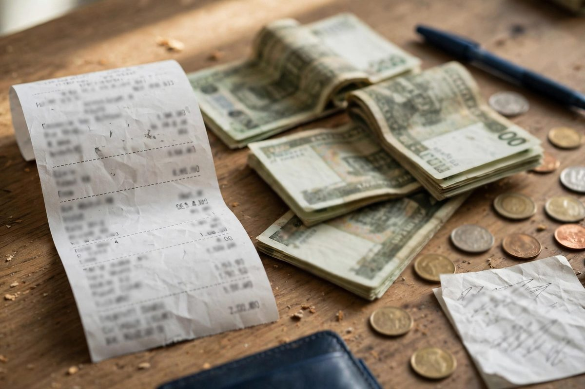

Currency Exchange Fees: The Hidden Costs Explained

The spread is the real fee
Most people check the fee when converting currency and ignore the rate, but the rate is where the money is. The spread is the difference between the mid-market rate and the rate a provider offers you, and it is a fee in disguise. A provider offering no fee but a rate three percent below mid-market is charging you three percent, while a provider charging a one percent fee at the mid-market rate costs only one percent. Always compare the total amount received.
Spreads vary enormously by provider. Online specialists charge under one percent, banks typically charge two to four percent, and airport bureaus can charge ten percent or more. The spread also varies by currency pair: major pairs such as USD to EUR have tight spreads because they are heavily traded, while exotic pairs such as USD to a small African currency can have spreads of five percent or more even at good providers.
Fixed fees and commissions
Some providers charge a fixed fee per transaction, which hurts small conversions most. A five dollar fee on a 100 dollar conversion is five percent, but the same fee on a 5,000 dollar conversion is negligible. Commission is another name for the same thing, sometimes charged as a percentage of the amount. A few providers charge both a fee and a spread, which is why the total received is the only honest comparison.
ATM fees add another layer. Your own bank may charge a foreign ATM fee, the ATM operator may add its own fee, and the conversion spread applies on top. A single withdrawal can therefore cost five dollars or more in total. Withdrawing larger amounts less often reduces the fixed fees, but carrying more cash increases the risk of loss, so balance the two.
How to pay less
Compare at least three providers on the total received for your exact amount and currency pair, using the mid-market rate as your benchmark. Use fee-free cards for spending, and avoid dynamic currency conversion at tills and ATMs. For regular transfers, set up an account with a specialist provider once, so future transfers take minutes rather than a fresh comparison each time.
Be suspicious of zero-fee promises that do not show the rate, and of rates that look better than the mid-market rate, which is impossible for a retail customer. Read the small print on any card or account before travelling, and keep receipts so you can check that the rate applied matches the rate quoted. A few minutes of checking before you convert is the cheapest money you will ever save.
Putting It Into Practice
Audit your last currency conversion: find the receipt, look up the mid-market rate for that day, and calculate the true cost as a percentage. Most people are surprised by how large it is, especially if the conversion was at a bank or a bureau. Then compare the same amount with an online specialist and note the difference. That single number is the best motivation to change providers, and it turns an abstract lesson about spreads into a concrete saving on your next conversion.
Frequently Asked Questions
What is the spread in currency exchange?
The gap between the mid-market rate and the rate you are offered. It is a hidden fee, often larger than any visible charge.
Why do banks charge so much for currency exchange?
Because they add a margin of two to four percent to the rate, on top of any fee, and most customers never compare.
How can I avoid currency exchange fees?
Use fee-free cards, compare specialists on total received, and avoid airport bureaus and dynamic currency conversion.